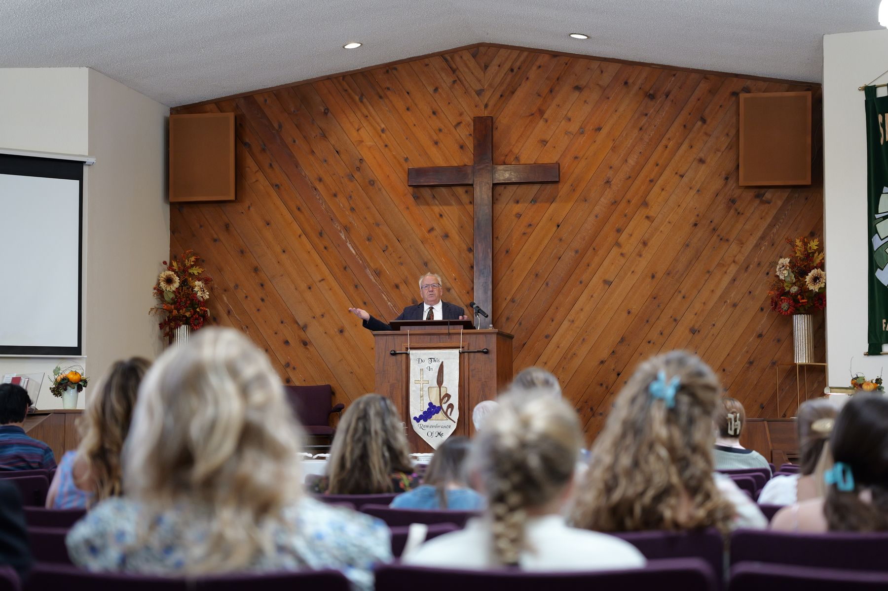

Service times · Pacific
Sunday, 11:00 a.m. & 6:00 p.m.
The stream appears on this page when the service starts. The rest of the week, the player shows our most recent service.
Recent uploads

Service times · Pacific
The stream appears on this page when the service starts. The rest of the week, the player shows our most recent service.
Recent uploads